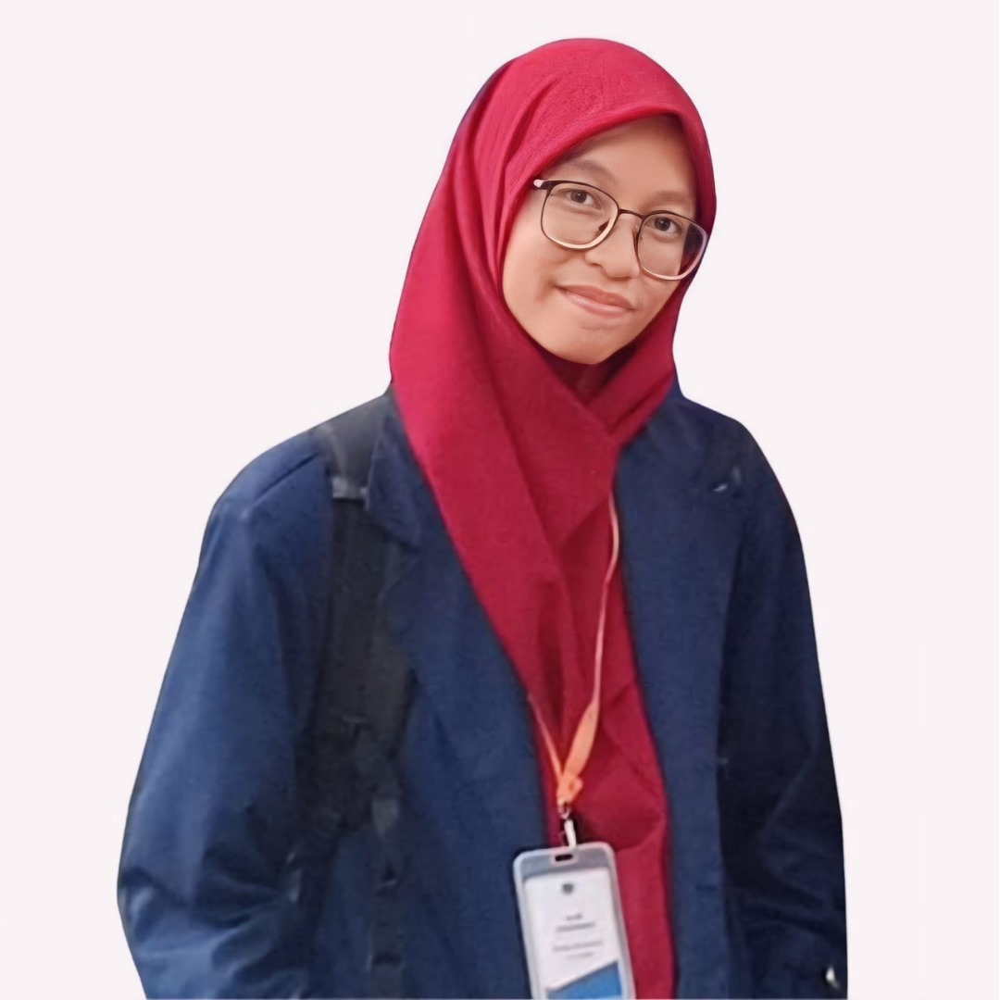

Nur Hasanah
Kontak
0896 3831 9027
ananazqia@gmail.com
Tentang Saya
Saya memiliki latar belakang sebagai desainer grafis dengan kemampuan dalam menciptakan visual yang menarik, komunikatif, dan sesuai kebutuhan klien.
Pengalaman Kerja
Percetakan AHA Print • Customer Service & Graphic Designer
Bogor • Mei 2021 - Sekarang
- Melayani pelanggan langsung dan online, menangani pemesanan hingga pembayaran.
- Mengatur layout produk sesuai permintaan klien.
- Membuat desain grafis untuk kebutuhan cetak (spanduk, brosur, undangan).
- Mengoperasikan mesin cetak dan memastikan hasil sesuai standar kualitas.
- Melakukan proses finishing (laminasi, potong, jilid).
Kemampuan
Hardskill
- Corel Draw
- Pemrograman (HTML, CSS, Bootstrap)
- Facebook Ads
Softskill
- Komunikasi Efektif
- Bekerja Sama dengan Tim
Pendidikan
STT Terpadu Nurul Fikri • Sistem Informasi
Jakarta • September 2023 - Sekarang
MAN 1 Bogor • IPA
Bogor • 2021
Proyek
Bahasa
Bahasa Indonesia